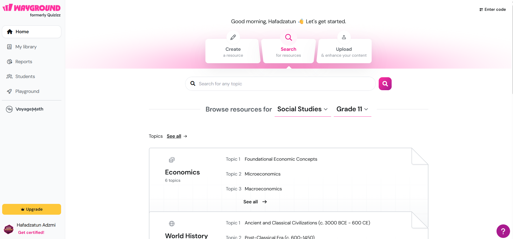
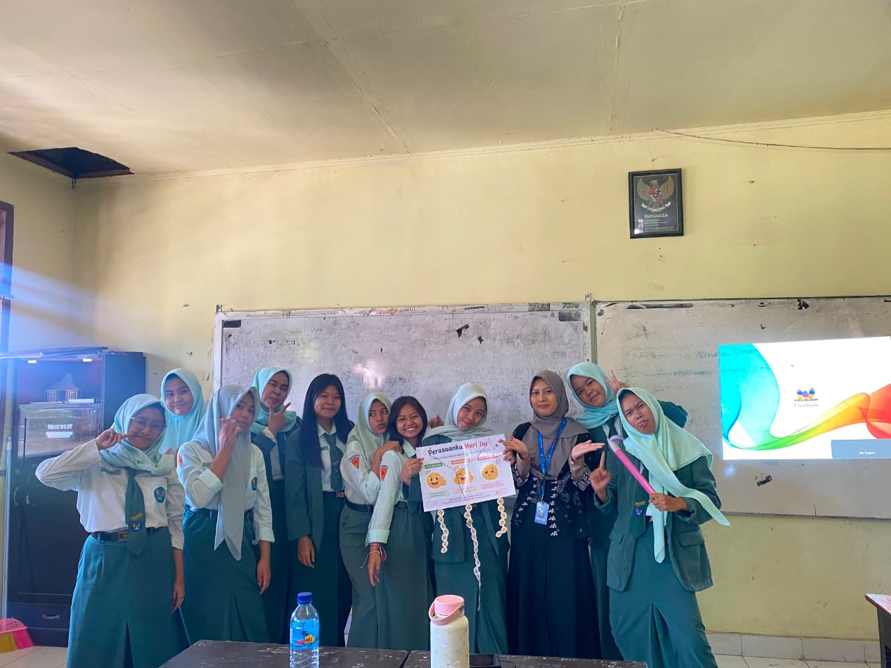
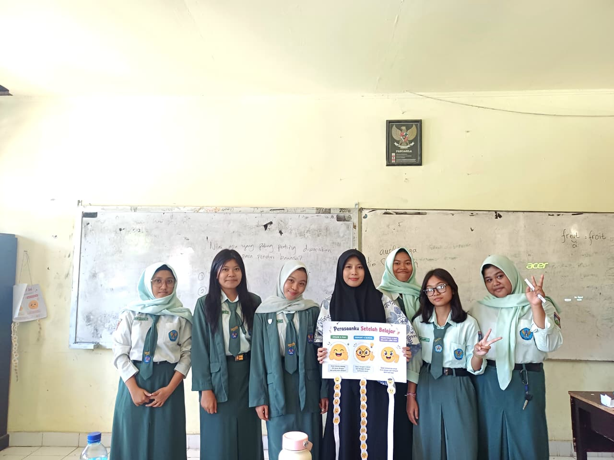
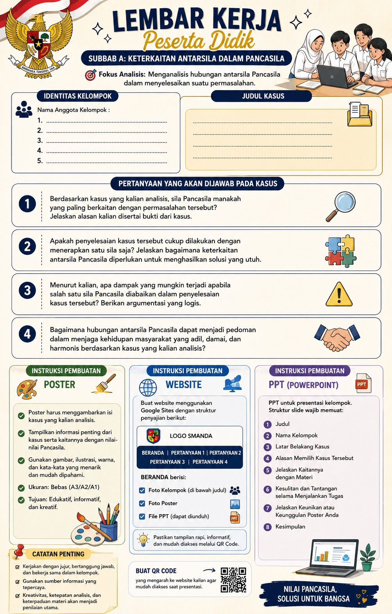
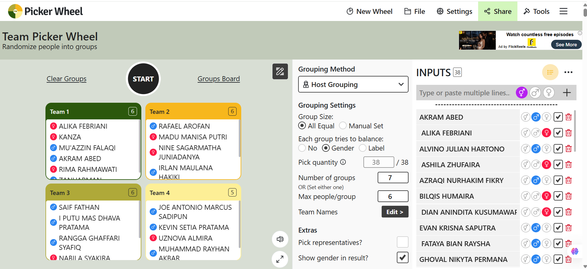

Praktik Pengalaman Lapangan
Dokumentasi, analisis, dan refleksi pelaksanaan praktik mengajar di SMAN 2 Mataram sebagai bagian dari pengembangan kompetensi profesional calon guru Pendidikan Pancasila.
Profil Identitas
Informasi identitas dan konteks pelaksanaan Praktik Pengalaman Lapangan.
Enam Komponen E-Portfolio
Rancangan Pembelajaran
Analisis rancangan/perencanaan pembelajaran yang digunakan dalam praktik mengajar.
Materi Pembelajaran
Analisis materi yang telah disusun, diterapkan, dan disesuaikan dengan kebutuhan peserta didik.
Media Pembelajaran
Analisis penggunaan PPT interaktif, Video turorial, LKPD, Canva, Google sites, Team picker whell, Web App Pohon Literasi.
Video Praktik Mengajar
Dokumentasi serta analisis pelaksanaan praktik mengajar.
Kegiatan Nonmengajar
Dokumentasi dan analisis kegiatan di lingkungan sekolah di luar kegiatan pembelajaran.
Instrumen Penilaian
Instrumen asesmen yang dirancang serta analisis penggunaannya.
Analisis Rancangan Pembelajaran
Analisis produk rancangan/perencanaan pembelajaran yang digunakan untuk melaksanakan praktik mengajar.
🎯 Gambaran Rancangan
📄 File Rancangan Pembelajaran
Rancangan Pembelajaran Siklus 1
Rancangan Pembelajaran Siklus 2
Rancangan Pembelajaran Siklus 3
Rancangan Pembelajaran Siklus 4
💡 Kelebihan dan Perbaikan
Kelebihan
- Pembelajaran memiliki alur yang terstruktur.
- Menggunakan aktivitas kolaboratif.
- Memanfaatkan media pembelajaran digital.
- Memberikan ruang bagi peserta didik untuk berdiskusi dan menghasilkan produk.
Perbaikan
- Menyesuaikan alokasi waktu dengan kondisi nyata.
- Memperjelas instruksi kegiatan proyek.
- Meningkatkan strategi manajemen kelas.
- Menyiapkan alternatif kegiatan apabila waktu pembelajaran terbatas.
🔎 Analisis Kesesuaian
Analisis Kesesuaian Rancangan PembelajaranAnalisis Materi Pembelajaran
Analisis materi pembelajaran yang telah disusun dan diterapkan dalam praktik mengajar.
📚 Materi yang Diterapkan
Bab 1 - Menjiwai PancasilaSub Bab A. Keterkaitan Sila-Sila Dalam Pancasila
Pancasila merupakan satu kesatuan yang utuh. Kelima sila saling berkaitan dan tidak dapat dipisahkan dalam penerapan nilai-nilai kehidupan bermasyarakat, berbangsa dan bernegara.
Materi ini dipilih untuk membantu peserta didik memahami hubungan antarsila serta menerapkan nilai-nilai Pancasila secara terpadu dalam menghadapi permasalahan di lingkungan sekolah dan masyarakat.
Sub Bab B. Makna Sila-Sila Dalam Pancasila
Setiap sila Pancasila mengandung nilai ketuhanan, kemanusiaan, persatuan, kerakyatan dan keadilan yang menjadi pedoman perilaku warga negara.
Materi ini dipilih untuk memperkuat pemahaman peserta didik terhadap makna setiap sila serta menumbuhkan sikap toleransi, gotong royong, tanggung jawab, musyawarah, dan keadilan dalam kehidupan sehari-hari.
Sub Bab C. Pancasila dalam Tindakan
Pancasila tidak hanya dipahami sebagai konsep dan dasar negara, tetapi juga diwujudkan melalui perilaku nyata dalam kehidupan sehari-hari.
Materi ini dipilih agar peserta didik mampu menghubungkan pengetahuan dengan praktik nyata, seperti menghargai perbedaan, membantu sesama, menyelesaikan konflik secara damai, dan melaksanakan tanggung jawab bersama.
Sub Bab D. Pancasila sebagai Ideologi Bangsa
Berdasarkan penulisan yang diberikan, materi ini memiliki judul yang sama dengan Subbab C sehingga perlu dikonfirmasi kembali sesuai buku yang digunakan.
Pemilihan materi perlu disesuaikan dengan isi subbab dalam buku agar kegiatan pembelajaran tidak mengulang materi yang sama dan tetap mencapai tujuan pembelajaran secara berkesinambungan.
BAB 2-Demokrasi Berdasarkan UUD NRI Tahun 1945
Sub Bab A. Periodesasi Pemberlakuan UUD di Indonesia
Sejarah ketatanegaraan Indonesia mengalami beberapa periode pemberlakuan konstitusi, yaitu UUD 1945 periode 1945–1949, Konstitusi RIS 1949–1950, UUD Sementara 1950–1959, UUD 1945 periode 1959–1999, serta UUD NRI Tahun 1945 setelah perubahan pada 1999–2002. Perubahan tersebut berkaitan dengan dinamika politik, sistem pemerintahan, dan perkembangan demokrasi Indonesia.
Materi ini dipilih untuk membantu peserta didik memahami perkembangan konstitusi Indonesia, menganalisis faktor penyebab perubahan konstitusi, serta mengidentifikasi hubungan antara konstitusi, sistem pemerintahan, dan praktik demokrasi. Materi ini juga mendorong peserta didik menghargai konstitusi sebagai landasan penyelenggaraan negara dan memahami pentingnya demokrasi yang sesuai dengan UUD NRI Tahun 1945.
🎯 Tujuan Penyusunan Materi
Materi disusun agar peserta didik dapat memahami konsep secara bertahap, menghubungkan materi dengan kehidupan nyata, serta menerapkan nilai-nilai Pendidikan Pancasila dalam konteks kehidupan sehari-hari.
🧠 Karakteristik Materi
- Konseptual
- Kontekstual
- Mendorong penalaran kritis
- Dapat dikaitkan dengan permasalahan nyata
- Mendukung diskusi dan proyek
📄 File Materi
Materi Pembelajaran
Unduh file materi disini.
🔎 Analisis Penerapan Materi
- Satuan Pendidikan: SMAN 2 Mataram
- Kelas: XI Sosial
- Kurikulum: Kurikulum Merdeka
- Kegiatan: Praktik Pengalaman Lapangan (PPL) PPG Calon Guru
- Materi: Bab 1 Menjiwai Pancasila dan Bab 2 Demokrasi Berdasarkan UUD NRI Tahun 1945
1. UUD 1945: berlaku sejak 18 Agustus 1945 sampai 27 Desember 1949.
2. Konstitusi Republik Indonesia Serikat (RIS): berlaku sejak 27 Desember 1949 sampai 17 Agustus 1950.
3. UUD Sementara 1950: berlaku sejak 17 Agustus 1950 sampai 5 Juli 1959.
4. Berlakunya kembali UUD 1945: dimulai melalui Dekret Presiden 5 Juli 1959.
5. UUD 1945 pada era Reformasi: mengalami empat tahap perubahan pada 1999–2002.
Analisis Media Pembelajaran
Analisis media yang digunakan untuk mendukung keterlibatan dan pemahaman peserta didik.
Asesmen Diagnostik Bab 1 menggunakan Wayground

Digunakan sebagai quis assesmen diagnostik kognitif untuk mengukur kemampuan awal siswa.
Emoji Perasaan Sebelum Belajar Siswa

Digunakan untuk mengetahui kesiapan perasaan siswa sebelum menjalani proses pembelajaran.
Emoji Perasaan Setelah Belajar Siswa

Digunakan untuk mengetahui ungkapan perasaan siswa setelah menjalani proses pembelajaran.
PPT Interaktif
Digunakan untuk menyajikan materi secara visual serta memberikan pertanyaan pemantik.
Klik unduh PPT dibawah:
PPT Siklus 1_Bab 1 Sub Bab A
PPT Siklus 2_Bab 1 Sub Bab B
PPT Siklus 3_Bab 1 Sub Bab C
PPT Siklus 3_Bab 1 Sub Bab D
PPT Siklus 4_Bab 2 Sub Bab A
Tutorials Pembuatan Web dari Google Sites 🌐
Website digunakan sebagai penyajian hasil analisis siswa berdasarkan pertanyaan yang ada di LKPD.
Tutorials Pembuatan Barcode dari Canva 🎨
Barcode dibuat dari link website google sites dan digunakan sebagai media produk proyek untuk menyajikan hasil analisis kelompok.
LKPD

Membantu peserta didik mengikuti langkah analisis dan menyelesaikan tugas secara sistematis.
Picker Wheel

Digunakan untuk membantu pembagian kelompok secara lebih menarik dan terstruktur.
Website App Asesmen Diagnostik Bab 2 dan Pohon Literasi x Detektif Konstitusi
Digunakan untuk membantu pembagian kelompok sesuai jumlah point yang diperoleh melalui asesmen kemudian melanjutkan menjawab soal dengan menghubungkan kata kunci dengan konsep pada pohon literasi secara acak namun berkelompok. Selanjutnyna menjawab refleksi dan menghasilkan produk mindmapping sesuai tingkatan soal yang diperoleh.
Mulai Web App ↗
🔎 Analisis Efektivitas Media
Hasil Analisis Media PembelajaranAnalisis Video Praktik Mengajar
Dokumentasi dan analisis pelaksanaan praktik mengajar secara langsung di kelas.
🎥 Identitas Video
Judul video: Praktik Mengajar Pendidikan Pancasila
Satuan pendidikan: SMAN 2 Mataram
Kelas: XI Sosial
🎥 Identitas Video
Judul video: Praktik Mengajar Pendidikan Pancasila
Satuan pendidikan: SMAN 2 Mataram
Kelas: XI Sosial
✅ Hal yang Berhasil
- Pembukaan pembelajaran dapat dilaksanakan secara terstruktur.
- Guru menggunakan PPT interaktif.
- Peserta didik diberi kesempatan menjawab pertanyaan.
- Peserta didik terlibat aktif dalam media pembelajaran
- Peserta didik terlibat dalam diskusi kelompok.
- Kegiatan refleksi tetap dilaksanakan.
⚠️ Hal yang Perlu Diperbaiki
- Pengelolaan waktu.
- Manajemen kelas.
- Pengelolaan siswa yang mudah terdistraksi.
Analisis Kegiatan Nonmengajar
Dokumentasi keterlibatan dalam kegiatan sekolah di luar aktivitas pembelajaran di kelas.
🏫 Kegiatan Nonmengajar
Kegiatan nonmengajar adalah kegiatan yang dilakukan oleh guru atau mahasiswa PPG di lingkungan sekolah selain melaksanakan proses pembelajaran secara langsung yang bertujuan mendukung penyelenggaraan pendidikan, pembinaan peserta didik, pengembangan karakter serta terciptanya lingkungan sekolah yang aman, tertib, dan kondusif.
Kokurikuler
Kegiatan yang dirancang untuk memperkuat, memperdalam, atau memperkaya kompetensi dan karakter peserta didik yang berkaitan dengan tujuan pendidikan dan pembelajaran.
Ekstrakulikuler
Kegiatan yang diselenggarakan di luar kegiatan intrakurikuler dan kokurikuler untuk mengembangkan potensi, minat, bakat, kepribadian, kerja sama, kemandirian, dan kemampuan sosial peserta didik.
🔎 Analisis Manfaat Kegiatan
📸 Dokumentasi Habituasi atau Kegiatan Rutin Non Mengajar
Analisis media yang digunakan untuk mendukung keterlibatan dan pemahaman peserta didik.
Upacara Bendera Setiap Hari Senin
Pembiasaan dan penguatan karakter kebangsaan di SMAN 2 Mataram.

Imtaq setiap hari Jumat
Pembiasaan keagamaan dan penguatan karakter religius di SMAN 2 Mataram.

Penerapan 5S (Senyum, Salam, Sapa, Sopan, Santun)
Budaya positif dan pembiasaan karakter di SMAN 2 Mataram.

📸 Dokumentasi Kokurikuler
Analisis media yang digunakan untuk mendukung keterlibatan dan pemahaman peserta didik.
Penerapan P5 oleh masing-masing wali kelas
Penguatan karakter dan pengembangan potensi peserta didik di SMAN 2 Mataram.

Sosialisasi Bawaslu pada jam pelajaran PPKn
Kegiatan edukasi dan kemitraan dengan lembaga eksternal kelas XI sains 2 di SMAN 2 Mataram.

Perayaan Maulid Nabi melalui ceramah tentang perjalanan Nabi Muhammad saw.
Kegiatan keagamaan dan pembinaan karakter di SMAN 2 Mataram.

Sosialisasi polisi bertema “Berani Bersuara, Selamatkan Sesama” bersama guru BK
Edukasi, pencegahan kekerasan, dan pembinaan peserta didik di SMAN 2 Mataram.

📸 Dokumentasi Ekstrakulikuler
Analisis media yang digunakan untuk mendukung keterlibatan dan pemahaman peserta didik.
Lomba fashion show perayaan Maulid Nabi oleh Remus SMAN 2 Mataram
Kegiatan organisasi siswa dan pengembangan kreativitas di SMAN 2 Mataram.

Partisipasi dalam lomba futsal antarsekolah
Pengembangan minat dan bakat serta prestasi olahraga di SMAN 2 Mataram

Kegiatan ekstrakurikuler PMI
Pengembangan keterampilan, kepedulian sosial, dan kemanusiaan di SMAN 2 Mataram.

Instrumen Penilaian
Dokumentasi instrumen asesmen yang dirancang beserta analisis penggunaannya.
Asesmen Diagnostik
Digunakan untuk mengetahui kondisi awal pengetahuan dan karakteristik peserta didik.
Asesmen Formatif
Digunakan selama proses pembelajaran untuk memantau perkembangan pemahaman peserta didik.
Asesmen Produk
Digunakan untuk menilai kualitas produk yang dihasilkan dalam kegiatan proyek.
📋 Instrumen Penilaian yang Dirancang
| No. | Instrumen | Tujuan | Bentuk | Waktu |
|---|---|---|---|---|
| 1 | Asesmen Diagnostik | Mengetahui kemampuan awal | Tes / Non-Tes | Awal |
| 2 | Observasi | Mengamati keterlibatan siswa | Lembar observasi | Proses |
| 3 | Penilaian Produk | Menilai hasil proyek | Rubrik | Akhir |
| 4 | Refleksi | Mengetahui pengalaman belajar | Pertanyaan reflektif | Akhir |
🔎 Analisis Instrumen
Kesesuaian Instrumen Penilaian dengan Tujuan Pembelajaran: Bab I Menjiwai Pancasila📎 File Instrumen
Instrumen dan Rubrik Penilaian
Masukkan dokumen instrumen penilaian, kisi-kisi, rubrik, lembar observasi, atau dokumen asesmen lainnya.
Refleksi Pengalaman PPL
Refleksi terhadap pelaksanaan pembelajaran, kendala, respons peserta didik, umpan balik Guru Pamong, dan rencana perbaikan.
✅ Aktivitas yang Berhasil
Kegiatan Pembukaan
Mengecek kesiapan siswa, doa, kehadiran, silent of moment, tujuan pembelajaran, dan apersepsi menggunakan PPT interaktif.
Kegiatan Inti
Penyampaian materi melalui tanya jawab, pembentukan kelompok, analisis kasus, perencanaan proyek, Google Sites, poster, dan persiapan presentasi.
Kegiatan Penutup
Refleksi, tanya jawab, penyimpulan bersama, penyampaian materi berikutnya, dan penutupan.
⏰ Kendala Waktu
- Keterlambatan siswa memasuki kelas.
- Pengecekan kehadiran yang membutuhkan waktu.
- Pengambilan dan pemasangan LCD.
- Waktu pembelajaran terpotong oleh jadwal MBG.
👥 Kendala Manajemen Kelas
- Suasana kelas terkadang ramai.
- Siswa menyoraki teman ketika terjadi kesalahan.
- Beberapa siswa sulit diarahkan.
- Terdapat siswa yang sering keluar masuk kelas.
😊 Respons dan Keterlibatan Peserta Didik
Sebagian besar peserta didik menunjukkan kesiapan, antusiasme, dan keterlibatan dalam pembelajaran. Penggunaan emoji perasaan membantu guru memperoleh gambaran awal mengenai kondisi emosional peserta didik. Kegiatan proyek juga memberikan ruang bagi peserta didik untuk bekerja sama, bertukar pikiran, menganalisis kasus, dan menghasilkan produk.
Terdapat pula peserta didik yang membutuhkan pendampingan lebih lanjut dalam memahami instruksi dan menentukan kasus. Guru memberikan bimbingan secara langsung serta membantu kelompok tersebut menentukan kasus dan memahami langkah pengerjaan proyek.
💬 Umpan Balik Guru Pamong
Guru Pamong memberikan ruang kepada praktikan untuk mengatur gaya belajar dan strategi pembelajaran sesuai kondisi peserta didik dengan tetap memperhatikan ketercapaian pembelajaran serta inovasi pembelajaran.
🔄 Rencana Perbaikan Rancangan Pembelajaran
- Menyesuaikan alokasi waktu dengan kondisi nyata dan jadwal sekolah.
- Memadatkan kegiatan pembukaan tanpa menghilangkan komponen penting.
- Memperjelas aturan dan instruksi proyek.
- Menyediakan contoh kasus sebagai alternatif apabila peserta didik mengalami kebingungan.
- Meningkatkan strategi manajemen kelas.
- Mempertahankan penggunaan PPT interaktif.
- Mempertahankan kegiatan refleksi dan asesmen formatif.
- Menyiapkan alternatif kegiatan apabila waktu pembelajaran mengalami perubahan.
🌱 Refleksi Profesional
Pengalaman praktik mengajar memberikan pemahaman bahwa keberhasilan pembelajaran tidak hanya ditentukan oleh kualitas rancangan yang dibuat, tetapi juga oleh kemampuan guru dalam menyesuaikan rancangan dengan kondisi nyata di kelas. Pengalaman menghadapi keterbatasan waktu, keberagaman karakter peserta didik, dan dinamika kelas menjadi bagian penting dalam proses pengembangan kompetensi saya sebagai calon guru.